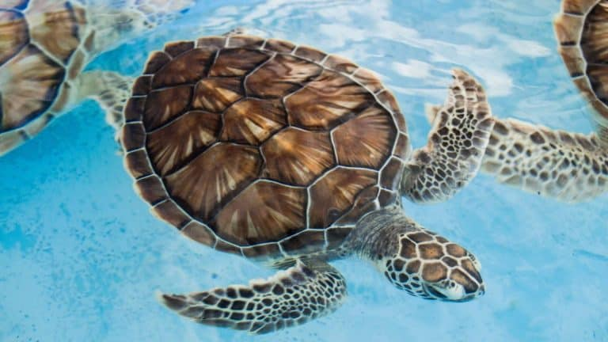
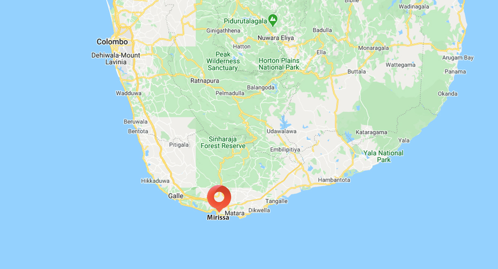
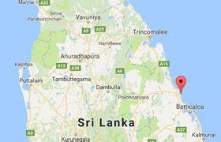
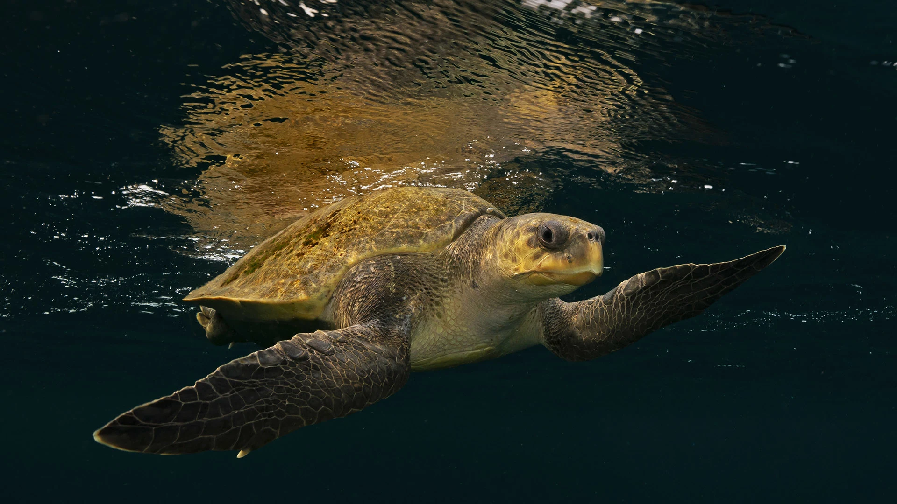
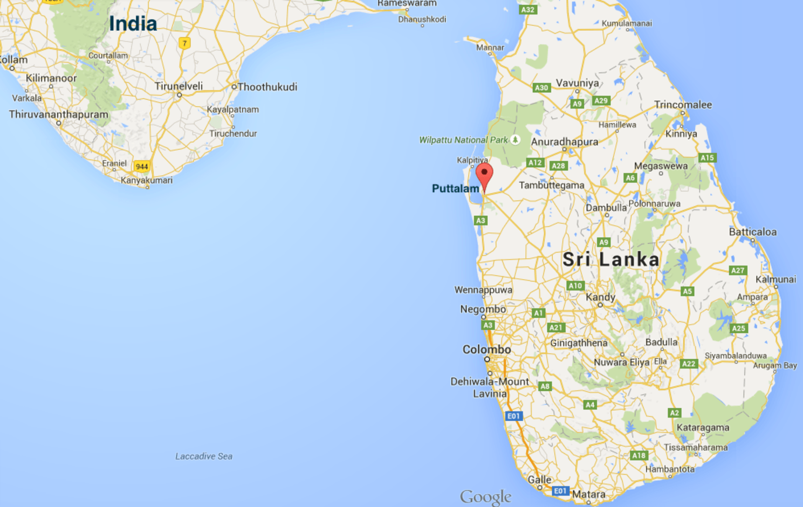

-

- Home
- Turtle Catgories
- Hikkaduwa Turtle Hatchery
- Threats to Turtles
- Other Turtle HatcheriesKosgoda Bentota
- Purchace and Donate
Green Turtles
The Sri Lankan Green Turtles, scientifically known as Chelonia mydas, are a majestic and endangered species found in the waters surrounding Sri Lanka. Known for their beautiful green shells and graceful movements, these turtles have captivated the hearts of many. Sri Lankan Green Turtles are known to undertake long migrations across the Indian Ocean for nesting purposes. The sandy beaches of Sri Lanka serve as important nesting sites for these turtles, where they lay their eggs in carefully crafted nests. Conservation efforts are crucial to protect these nesting sites and ensure the survival of the species. Sadly, Sri Lankan Green Turtles face numerous threats, including habitat loss, pollution, and poaching. Conservation organizations and local communities are working tirelessly to protect these incredible creatures and raise awareness about their importance in maintaining marine ecosystems..

Loggerhead Turtles

Sri Lankan Loggerhead Turtles (Caretta caretta) are a significant presence in the waters surrounding Sri Lanka. Known for their robust build and distinctive large heads, these turtles play a vital role in marine ecosystems. Sri Lanka's coastal areas serve as crucial nesting grounds for these magnificent creatures. Unfortunately, loggerhead turtles face threats such as habitat degradation, pollution, and accidental capture in fishing gear. Conservation efforts are underway to protect their nesting sites and raise awareness about their conservation status. By supporting these initiatives and promoting sustainable practices, we can contribute to the preservation of Sri Lankan Loggerhead Turtles and the biodiversity of our oceans.

Olive Ridley Turtles
Olive Ridley Turtles (Lepidochelys olivacea) are a significant presence in Sri Lanka. These turtles have olive-colored carapaces and are smaller in size compared to other turtle species. They visit Sri Lankan shores for nesting, forming massive arribadas (mass nesting events) at certain beaches. Conservation efforts are focused on protecting their nesting sites, reducing threats such as poaching and habitat destruction. Public awareness campaigns promote the importance of preserving the Olive Ridley Turtles and their critical role in the marine ecosystem.

Extra Info: Green Turtle loggerhead Turtle OliveRidley Turtle location:
Mirissa Eaastern Puttalam lifespan(yrs):
60-70 50-70 30-50 diet:
herbivorous omnivorous carnivorous